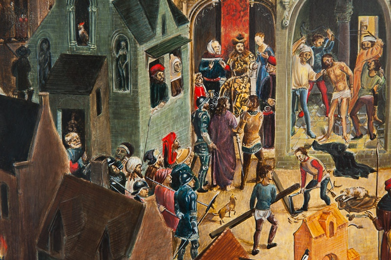

Grudzień 2025 · Zofia Siek

Kolory ze skał, roślin i minerałów
Zanim pojawiły się farby w tubkach, malarze sami przygotowywali swoje barwy. Pigmenty pozyskiwano z minerałów, ziemi, roślin, a nawet owadów. Każdy kolor miał swoją historię, cenę i tajemnice obróbki.
Ultramaryna — błękit cenniejszy od złota
Najdroższym pigmentem w historii malarstwa był ultramaryna naturalna, otrzymywana z lazurytu — półszlachetnego kamienia sprowadzanego z Afganistanu. Proces jego przygotowania był niezwykle pracochłonny: kamień kruszono, mielono, mieszano z woskiem i żywicą, a następnie wielokrotnie płukano w ługu, by wyodrębnić najczystsze kryształy.
Cena ultramaryny często przekraczała cenę złota, dlatego w dawnych kontraktach malarskich zamawiający osobno opłacał ten pigment. Rafael i Vermeer używali go do malowania szat Madonny — niebieski płaszcz Matki Boskiej był więc dosłownie bezcenny.
Ochry — najstarsze barwy ludzkości
Ochry to pigmenty ziemne — tlenki żelaza zmieszane z glinką. Żółta ochra, czerwona ochra i sienna palona to kolory, które ludzkość zna od czasów jaskiniowych malowideł w Lascaux (ok. 17 000 lat temu). Są trwałe, tanie i bezpieczne — do dziś stanowią podstawę mojej palety.
Cynober — czerwień z rtęci
Intensywna czerwień cynobru pochodzi z minerału o nazwie kinowar — siarczku rtęci. Znany w Chinach od tysiącleci, w Europie był jednym z najcenniejszych pigmentów. Piękny, ale niebezpieczny — opary rtęci wydzielające się podczas ucierania pigmentu stanowiły zagrożenie dla zdrowia malarzy.
Zieleń malachitowa i verdigris
Malachit — zielony minerał miedziowy — dawał piękną, głęboką zieleń, ale był kapryśny w użyciu. Zbyt drobno zmielony tracił intensywność, zbyt grubo — nie dał się równomiernie nałożyć. Alternatywą był verdigris (grynszpan) — zieleń otrzymywana przez trawienie miedzi octem. Efektowna, ale niestabilna i żrąca.
Pigmenty w mojej pracowni
Pracując nad kopiami dawnych dzieł, staram się używać tych samych pigmentów, które stosowali oryginalni twórcy. W mojej pracowni znajdziesz słoiki z ochrami, umbrami, sienną, bielą ołowiową (zastąpioną dziś bezpieczną bielą tytanową), żółcią neapolitańską i naturalną ultramarnyą. To nie tylko kwestia autentyczności — pigmenty naturalne mają inny charakter optyczny niż syntetyczne, co widać w końcowym efekcie.
Chcesz sam popracować z pigmentami?
Zapisz się na warsztaty